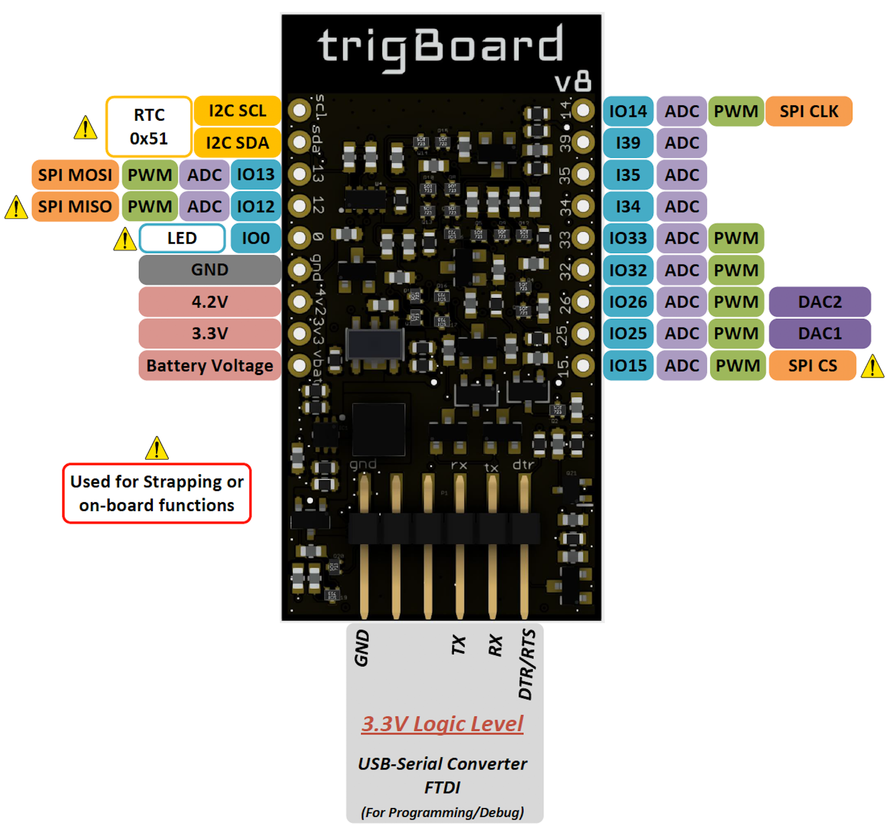
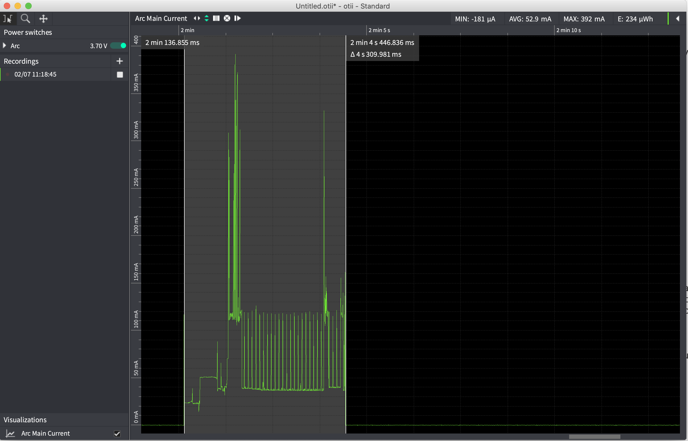
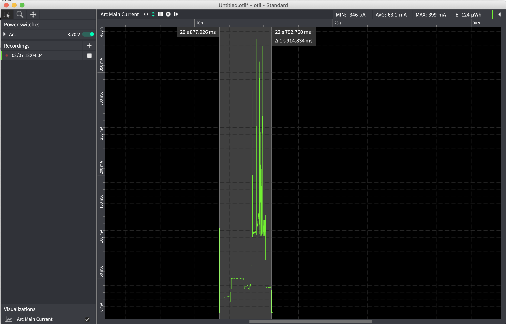
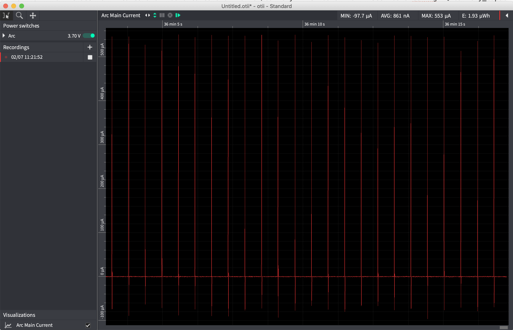

Hardware¶
| Special Hardware on the trigBoard | |
|---|---|
Ultra Low Power Real Time Clock RV-8263-C7
* Can check if sensor contact is still open/closed after timeout
* Check battery voltage at some interval or even “phone home”
* Read sensor data every hour or whatever and send to cloud or “fetched”
|
|
3.3V Switched Power Supply
* Anytime the board is triggered, the 3.3V Supply is enabled
This is how the sleep current is so low, power is completely removed
|
|
4.2V Always On Power Supply
* This is always enabled, to keep sensor circuit and RTC powered
* Boosted from battery voltage, so will always be 4.2V
|
|
Pulsed Normally Open/Closed Monitoring Circuit
* The secret sauce as to how the board monitors the sensor input
* No jumpers or anything, both Normally Open/Closed works with v8
|
|
Auto Reset for easy programming from USB-Serial Converter 3.3V
* Recommended is from KD Circuits!
|
|
Battery Voltage Measurement
* Tested during factory programming and single point offset applied
|
|
| Based on Espressif ESP32 WiFI+Bluetooth Module | |
|---|---|

|
ESP32-WROOM-32D 16MB Version
Arduino Compatible with Core Installation - see firmware section
Programmable with USB-Serial Converter (onboard autoreset)
x14 expansion pins broken out for sensors/switches/actuators/etc… - see pinout section
|
Trigger Input¶
The positive pin is tied to the 4.2V Source boosted from the battery. The Negative pin is the actual sensor input, which requires a rapid cross through ~3V in order to wake the trigBoard up. Typically just a switch of some kind is used across the sensor input like window/door sensors. You’ll notice all of the interesting projects that use this input for more than just a dry contact input, but the interesting thing to note is this input requires this rapid cross through ~3V in order to trigger. Sometimes “slow moving” inputs need to sped up - like in the case of the water detector, so in that case a MOSFET is used to create a “hair trigger”. But also, there are certain applications where the input is very quick, or rapidly switched, so depending on what the trigBoard is hooked up to, it is important to understand the timing specs:
Timing Specifications¶
The input must be open or closed for at least ~200mS in order to wake the trigBoard.
Testing with a relay to open/close within 100ms, here you can see does not wake the trigBoard (videos are slow):
But works fine at 200ms:
And if you try to re-wake the board within ~200ms after it shuts down, there is a chance it will not trigger. This is due to the low power circuitry “un-latching”. So if you had a door you were monitoring for both open and close, and someone ran out the door, there’s a chance you may only detect the opening of the door. In this scenario, the RTC to check if the door is still open still would work though, but there are things we can do in firmware to check for this, like change the RTC time after an opening to be shorter, just so you know for sure within a period of time the door was closed. Or even elongate the time that you stay awake for, so you can wait for the closure, but then of course this will impact the battery life.
If you have a “button” style input, where someone could quickly tap the button, then the trigBoard may not wake. In this case, here is a simple RC circuit you can build to stretch the wake signal long enough:
Pinout¶
Reference for the expansion pins:
For expansion - randomnerdtutorials has a great guide on what pins do what. Just be careful with the pins marked above with the hazard symbol. These pins can be used, but just make sure that the mode they’re configured for does not interfere with the normal operation of the board. For example, the GPIO12 cannot be held high during boot up, or the ESP32 will never fully boot up and execute the code. Also, on board is an RTC using the I2C port, so that same port can be used for other I2C devices, just as long as there’s no address conflict.
trigBoard Pin Usage At the core of the trigBoard, it’s just a tricked out ESP32 development board with some incredible low power capability. Power is actually removed from the ESP32 in order to accomplish the single digit uA standby current. This is important to note since the 3.3V rail is controlled by the wake circuitry. If needed, the base firmware can be completely overwritten by whatever custom application that fits the needs of the user. These are the pins used by the wake circuitry on the trigBoard, which can be used by the user for the custom application:
Warning
- Logic Level is 3.3V on expansion pins - make sure to properly level shift if external device is powered by VBAT.
- 4V2 pin is always powered at 4.2V even if battery voltage is lower - this can be used to power devices if needed
- 3V3 pin is the switched 3.3V power to the board when triggered. Useful for polling sensors on wake event (RTC/or Input)

Battery¶
The greatest feature in the trigBoard is its amazing low standby current, so it is important to select a battery that gives the longest run time. There are a couple considerations to factor in:
- What is the target run time? Usually how many years?
- How often will the trigBoard wake up? Like for a door, how many times a day will that door open?
To get started quickly, let’s take an example:
- 1200mAh battery from adafruit
- The board is hooked up to a door and is opened once an hour
- Pushover used to send the notification
| Battery Capacity | 1200mAh |
|---|---|
| Awake Device Consumption | 60mA |
| Awake Time | 5sec |
| Sleep Device Consumption | 2uA |
| Sleep Time | 1hr |
| Battery Life | 1.2852 years! |
These parameters can be entered into the tool here: (make sure to enable advanced mode!)
Calculator¶
Current Consumption Data¶
Lithium Battery 3.7V¶
| 3.7V Wifi Connection to Pushover | |
|---|---|
| Awake Device Consumption | 52.9mA |
| Awake Time | 4.3sec |

| 3.7V Wifi Connection UDP Message 20 packets | |
|---|---|
| Awake Device Consumption | 63.1mA |
| Awake Time | 1.9sec |

| 3.7V Sleep Current | |
|---|---|
| Sleep Device Consumption | 0.861uA |

AAA Batteries 3.0V¶
| 3.0V Wifi Connection to Pushover | |
|---|---|
| Awake Device Consumption | 67.5mA |
| Awake Time | 4.3sec |

| 3.0V Wifi Connection UDP Message 20 packets | |
|---|---|
| Awake Device Consumption | 74.4mA |
| Awake Time | 2sec |

| 3.0V Wifi Connection TCP Message | |
|---|---|
| Awake Device Consumption | 68.9mA |
| Awake Time | 2sec |
| 3.0V Sleep Current | |
|---|---|
| Sleep Device Consumption | 1.05uA |

Recommended Batteries¶
Warning
- Operating voltage range is 1.8-5V, but the recommended operating voltage is 2.5-5V.
- Reverse polarity protection is built-in, but pay attention to polarity!
- Make sure the low battery threshold is set properly in the configurator for the particular battery topology
- Two AAA batteries in series (3V) is highly recommended, since they will have a low self-discharge rate, they’re easily replaceable, they’re small,they’re safe, wide operating temperature, and can have good capacities. For example, the Energizer Ultimate Lithium Batteries may yield 1200mAh! The trigBoard product page provides a compatible holder, but these exist elsewhere as well: Like this
- Other Combinations of AAA or AA If extremely long battery life is needed, could use AA instead of AAA batteries, or even three in series.
- Lithium Batteries Adafruit has a nice selection of these kinds of batteries - any of these will work
- ESP32 Settings The trigBoard is flashed with the base firmware to operate the processor at 80MHz. This reduces the current draw from the battery when the trigBoard. From 240MHz to 80MHz, the savings can be 20-30mA. Also note that the precompiled bin files on the git page are all with an 80MHz speed.
Mechanical¶

Screw-Terminals¶
The trigBoard is bread-board “friendly” meaning that 0.1” headers can be soldered in to allow for easy development. But for more permanent installations, screw down terminal blocks can be used.
These need to be 2.54mm(0.1inch) pitched terminal blocks - the ones shown here were purchased here but these are widely available and maybe not all 9 pins are needed for each side, so could use any pin-count required by the application.
I recommend placing some kapton tape down before soldering the terminal block just to insulate the pins on the ESP32 module from the terminal pins - just as a precaution: